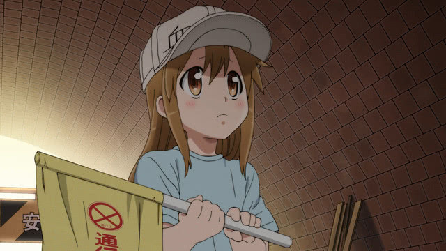
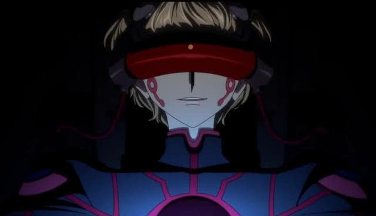

动漫新闻：
- 
最治愈的小天使评选 没人抢得过血小板
有很多动漫角色都被称为小天使，他们拥有一颗纯洁的心灵，对待他人总是那么温柔。那么，在这么多个治愈角色中，哪个小天使最受动漫迷的喜爱的呢？Anime!Anime!网站进行“哪个角色宛若天使”的评选活动.
排在第一位的是《工作细胞》血小板。【宛如天使的角色排名】
第2位：爱蜜莉雅（《Re：从零开始的异世界生活》）
第3位：天使（《Angel Beats》）第3位（并列）：春野樱（《火影忍者》）
第5位：赫里斯塔·兰斯（《进击的巨人》）
第6位：神乐（《银魂》）
第7位：日向雏田（《火影忍者》）
第8位：泉镜花（《文豪野犬》）
第8位（并列）：艾瑞卡·哈特曼（《强袭魔女》）第8位（并列）：雷姆（《《Re：从零开始的异世界生活》》）
第11位：片桐音（《敦君与女朋友》）第11位（并列）：木之本樱（《魔卡少女樱》）第11位（并列）：世良真纯（《名侦探柯南》）
第14位：宇都宫比玛（《灵魂力量》）第14位（并列）：香风智乃（《请问您今天要来点兔子吗？》）、神户盐（《HAPPY SUGAR LIFE》）、白（《游戏人生》）、灰原哀（《名侦探柯南》）、梅比斯?维维亚米利欧（《妖精的尾巴》）、毛利兰（《名侦探柯南》）、利希特·杰基尔兰德·轰（《吸血鬼仆人》） -
鲁路修复活了？剧场版《复活的鲁路修》预告公开
对于很多和我年龄差不多的动漫爱好者来说，《反叛的鲁路修》这部作品多少是知道的。记得当初这部作品才开播的时候，真的是国内国外各种动漫相关的杂志铺天盖地都是这部作品的名字，绝对的当年的霸权之作。而自从鲁路修的剧场版宣布公开以来，也是一直牵动着粉丝们的心，特别是“车夫党”们也在翘首以盼结局到底是怎么地。最近，剧场版《复活的鲁路修》终于公开了第一弹的宣传片，根据之前的情报来看，这次或许是一个全新的故事.
在此之前，鲁路修的剧场版电影：《Code Geass 反叛的鲁路修》三部曲已经在日本上映完毕，剧情相对于此前的动画来说并非是重制版，而是加入了不少新的内容。而这次的《复活的鲁路修》，官方宣传的是完全的新剧情新内容。
之前的3部剧场版的话，印象中熟肉一直有组在跟，这部的话暂定明年2月才会上映，咱们国内的粉丝想看的话，还得等一段时间咯。